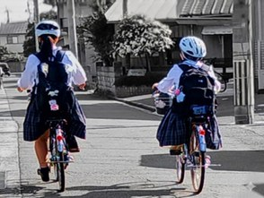
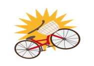
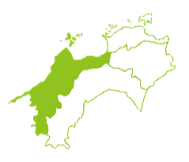
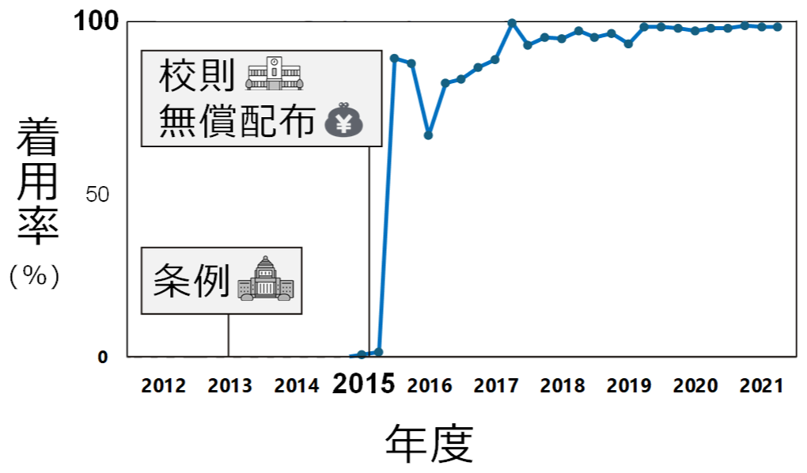

自転車ヘルメットの着用率を高めるには
自転車通学は、自宅から離れた学校へ通学するための主要な通学手段であるとともに、子ども達にとって、からだを動かす重要な機会の一つでもあります。
一方で、交通事故のリスクも無視できず、徒歩通学よりも高い確率で事故が起こっている現状もあります。こうした事故による致命的な外傷を防ぐ手段として、ヘルメットの着用が効果的であることが知られています。
2023（令和5）年施行の改正道路交通法では、すべての自転車利用者に乗車用ヘルメット着用が努力義務となりました。しかし、その着用率は、全国的に伸び悩んでいる実態もあり、子どもの中でも、特に高校生において着用率が低くなっています。
本節では、全国に先駆けて高校生の自転車ヘルメット着用促進に取り組んだ愛媛県の多面的な施策とその成果について紹介します。（鎌田真光）


１．ヘルメット着用促進に向けた、愛媛県の多面的な取り組み
愛媛県では、次の3施策を含む多面的な取り組みが行われました。

① 条例によるヘルメット着用の努力義務化
愛媛県は2013年度に「自転車の安全な利用の促進に関する条例」を施行し、全国で初めて全年齢の自転車利用者にヘルメット着用を努力義務化しました。
② 高校の校則によるヘルメット着用義務化
愛媛県内の全公立高校では、2015年度より校則で自転車通学中のヘルメット着用が義務化されました。
2018年度には県内の全高校(私立高校を含む)が、同様に校則で着用義務化となりました。
③ ヘルメットの購入支援 (無償配布 + 購入補助)
愛媛県庁と愛媛県教育振興会は、2015年度に県内の全公立高校生にヘルメットを無償配布しました。
その後、2016―17年度には県内の全高校生(私立高校生含む)を対象として、ヘルメットの購入補助も実施しました。
２．多面的な取り組みの成果
１）ヘルメット着用率の向上
愛媛県の高校生の着用率は、2015年度から始まった多面的な取り組みの直後に90%弱に急上昇し、2017年以降はほぼ100%で推移しています。

出典：筆者作成
高校生のヘルメット着用を促すには、「周りが被っていないのに、自分だけ被るのは恥ずかしい」という心理にも対応する必要があります。
全校一斉、地域全体でルール化することで、新しい「当たり前」を形成することが出来ます。
また、無償配布を含めた経済的な支援も組み合わせることで、家庭の経済状況等によらない普及が実現出来たと考えられます。
２）頭部外傷・死亡例の減少
愛媛県および全国の2007-22年度の交通事故データ（警察庁）を用いた分析*により、
- 愛媛県では、上記１．で紹介した①～③の多面的な施策の後に、自転車通学中の高校生の頭部外傷が減少していたことが分かりました。
- シミュレーションによる推計の結果、愛媛県内では、8年間で1件の死亡例を含む36件の頭部外傷が予防出来た可能性が示されました。
- また、もし全国で同様な取り組みが行われていた場合、8年間で5件の死亡例を含む1125件の頭部外傷が予防出来たと推計されました。
*合成コントロール法を用いた分割時系列デザイン（Sugihashi et al., under review）